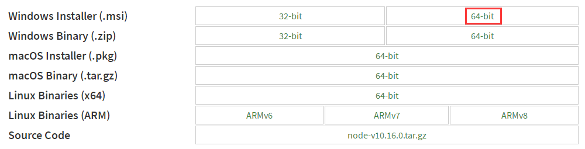

Sinopia 构建Windows 本地NPM 仓库
安装Node 环境

下载NSSM
如何使用NSSM
服务安装命令： nssm install <servicename>
参考：
Installing As a Windows Service
Petrik van der Velde edited this page Oct 31, 2017 · 10 revisions
Loosely based upon the instructions found here. I crafted the following and it provided me with a fully working sinopia service installation:
Create a directory for sinopia
mkdir c:\sinopiacd c:\sinopia
Install sinopia locally (I ran into npm issues with global installs)
npm install sinopia
Create your config.yaml file in this location (
c:\sinopia\config.yaml)Windows Service Setup
Using NSSM:
Download NSSM and extract
Open an administrative command
Browse to the nssm extract location
Run
nssm install sinopiaAt a minimum you must fill in the Application tab Path, Startup directory and Arguments fields. Assuming an install with node in the system path and a location of c:\sinopia the below values will work:- Path:
node - Startup directory:
c:\sinopia - Arguments:
c:\sinopia\node_modules\sinopia\lib\cli.js -c c:\sinopia\config.yaml
You can adjust other service settings under other tabs as desired. When you are done, click Install service button
- Path:
Start the service
sc start sinopia
Using WinSW
- Download WinSW
- Place the executable (e.g.
winsw-1.19-bin.exe) into this folder (c:\sinopia) and rename it tosinopia-winsw.exe
- Place the executable (e.g.
- Create a configuration file in
c:\sinopia, namedsinopia-winsw.xmlwith the following configuration
1 | <service> |
- Install your service
cd c:\sinopiasinopia-winsw.exe install
- Start your service
sinopia-winsw.exe start
Some of the above config is more verbose than I had expected, it appears as though ‘workingdirectory’ is ignored, but other than that, this works for me and allows my sinopia instance to persist between restarts of the server, and also restart itself should there be any crashes of the sinopia process.
Sinopia 目录结构
Sinopia 配置文件（config.yaml）
1 | # |